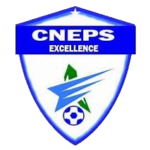

SENEGAL
Acceuil
Equipe Pro
Club
Historique
Galerie
Contact
sacré khalil
L’AS Pikine renoue avec la victoire face au CNEPS
Mamdou Moustpha, adjoint au coach donne son avis sur la victoire de son équipe et aborde le prochain match
L’AS Pikine concède sa deuxième défaite de la saison face à l’ASEC Linguere
Conférence de presse du coach Massamba Cissé
As-Douane
As-pikine
jaraff
casa-sport
Cneps-Thies
Dakar-sacre-coeur
Diambar
Fénération-foot
GFC
Linguère
Mbour-Petite-cote
Ndiambour
TFC
Us-Gorée
 L’AS Pikine renoue avec la victoire face au CNEPS
L’AS Pikine renoue avec la victoire face au CNEPS
 As-Douane
As-Douane jaraff
jaraff Dakar-sacre-coeur
Dakar-sacre-coeur Fénération-foot
Fénération-foot Linguère
Linguère Mbour-Petite-cote
Mbour-Petite-cote Ndiambour
Ndiambour TFC
TFC